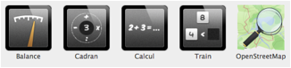

Quatre nouvelles activités viennent compléter le dossier des interactivités:
- Balance travaille les différentes équivalences de masse de manière visuelle.
- Cadran permet de travailler le nombre du jour avec les quatre opérations de base.
- Calcul génère automatiquement une série de calculs à résoudre.
- Train travaille les notions des nombres croissants et décroissants.
- OpenStreetMap est une alternative libre à l'application GoogleMap.

Le design et les aides des interactivités ont été également revus.